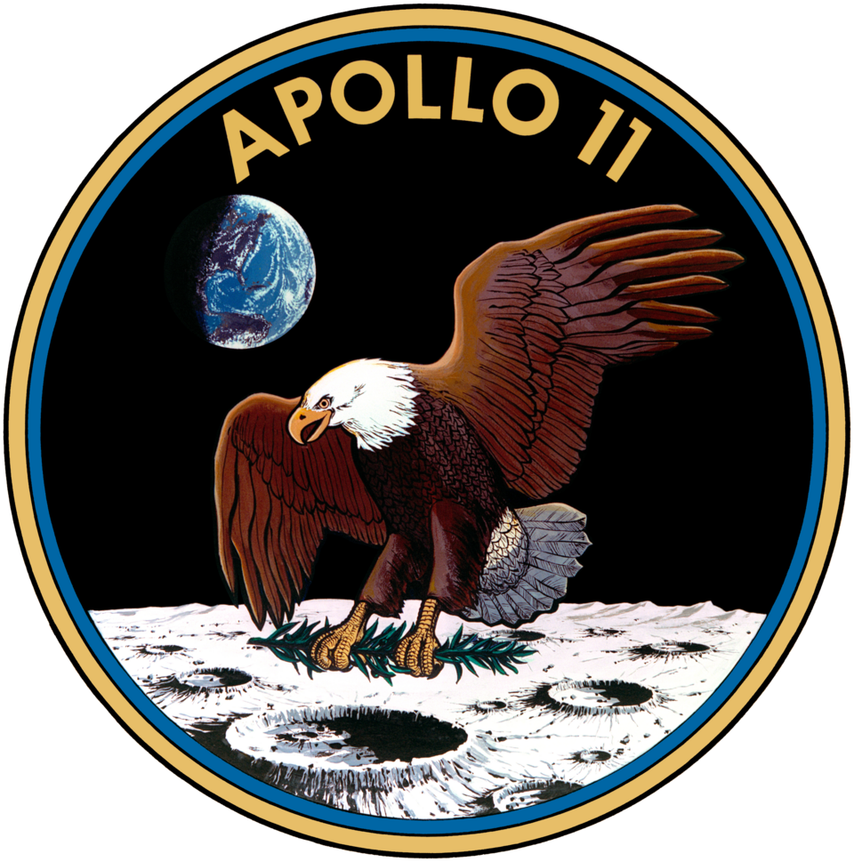

El hombre pisa la Luna
El módulo Águila de la misión Apolo XI alunizó en el Mar de la Tranquilidad y el astronauta Neil Armstrong descendió por la escalerilla ante los ojos de 600 millones de televidentes: «Un pequeño paso para el hombre, un salto gigantesco para la humanidad».

A las 17:17 de Buenos Aires, la voz serena de Neil Armstrong atravesó 384.000 kilómetros de vacío: «Houston, aquí Base Tranquilidad. El Águila ha alunizado». En la sala de control de Texas, ingenieros que venían conteniendo la respiración —el módulo descendió con el combustible justo, esquivando a mano un cráter sembrado de rocas— estallaron en un júbilo que dio la vuelta al planeta en segundos. Seis horas y media más tarde, Armstrong bajó la escalerilla y apoyó su bota izquierda sobre el polvo gris: por primera vez en su historia, la especie humana caminó sobre un suelo que no es el de su mundo.
Lo acompañó luego Edwin «Buzz» Aldrin, que describió el paisaje con dos palabras que quedarán: «magnífica desolación». Durante más de dos horas, los dos hombres plantaron la bandera de su país, desplegaron instrumentos científicos, juntaron piedras y hablaron por teléfono con el presidente Nixon, mientras su compañero Michael Collins los aguardaba, solo como nadie estuvo jamás, orbitando en la nave Columbia. En una placa dejada al pie del módulo se lee que vinieron en son de paz, en nombre de toda la humanidad.
La empresa nació de una herida y de un discurso: golpeado por el vuelo de Gagarin, el presidente Kennedy prometió en 1961 poner un hombre en la Luna antes del fin de la década, cuando su país acumulaba quince minutos de experiencia espacial. Siguieron los ensayos de Mercury y de Gemini, el incendio del Apolo 1, que costó tres vidas en la propia rampa de lanzamiento, y en la Navidad pasada la vuelta a la Luna del Apolo 8, que trajo de regalo la fotografía de la Tierra asomando sobre el horizonte lunar. El cohete que empujó a los tres hombres de hoy, el Saturno V, mide ciento diez metros y quema en dos minutos y medio el combustible de una flota entera: la torre de Babel, bromean los teólogos, por fin bien administrada.
La humanidad acompañó en vela: seiscientos millones de personas ante los televisores —la mayor audiencia de la que haya registro—, plazas con pantallas gigantes, vidrieras rodeadas de desconocidos que se abrazaban y calles tan vacías que más de una ciudad confesó la noche más tranquila de su año. En esta parte del mapa la caminata cayó al filo de la medianoche del domingo, y no importó: hubo mates, radios encendidas y chicos despertados a propósito por padres que querían poder decirles, algún día, que lo vieron juntos. Los viajeros, por lo demás, no vuelven directo a los abrazos: los espera una cuarentena de tres semanas, por si la Luna, además de gloria, despachara microbios.
La hazaña corona una carrera de ocho años contra los soviéticos y contra el plazo que fijó el presidente Kennedy, que no vivió para verla. Trabajaron en ella 400.000 personas y costó 24.000 millones de dólares, cifras tan astronómicas como el destino. Anoche, en todas las ciudades del mundo, millones de personas salieron a la vereda a mirar la Luna con otros ojos: ahí arriba, en ese disco de siempre, hay dos hombres durmiendo. Quedan por delante los siglos para medir lo que eso significa.